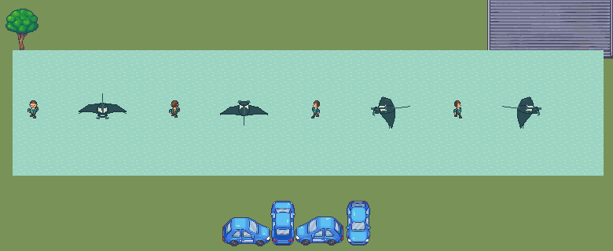

Pending draft. Fixed elevated camera,10 pixels/world unit. Twelve-pose pectoral swim and cephalic-lobe unroll. Native profiles41px versus24px proposal; broad adult disc retains its projected scale.
Observations / Integrity / Native loop
